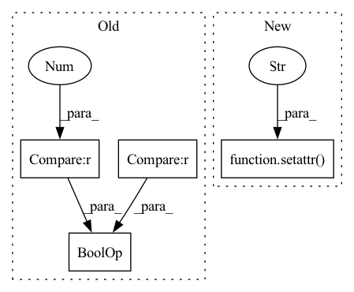

Pattern ID :29819
Before Change
dim = self._get_dim(x)
if dim == 3 and self.feature_dim == "1d" :
_x = np.full(x.shape, np.nan)
for time_step in range(x.shape[1]):
_x[:, time_step] = self.func(x[:, time_step])After Change
def transform(self, x:np.ndarray)-> np.ndarray:
setattr( self, "data_dim_" , np.ndim(x))
return self.func(x)
def inverse_transform_without_fit(self, x):
return self._inverse_transform(x, False)In pattern: SUPERPATTERN
Frequency: 4
Non-data size: 4
Instances Fragment ID: 88324114
Project Name: atrcheema/ai4water
Commit Name: 22bee9f8950e8b2d116fde390bea1901fe040728
Time: 2022-06-25
Author: ather_abbas786@yahoo.com
File Name: ai4water/preprocessing/transformations/_transformations.py
M Class Name: FuncTransformer
N Class Name: FuncTransformer
M Method Name: transform(2)
N Method Name: transform(2)
M Parent Class: ScalerWithConfig
N Parent Class: ScalerWithConfig
M File Name: ai4water/preprocessing/transformations/_transformations.py
N File Name: ai4water/preprocessing/transformations/_transformations.py
M Start Line: 450
M End Line: 459
N Start Line: 428
N End Line: 429
Before Change
return
// Build unique device id
if args.current_device_id is not None and len(str(args.current_device_id)) > 0 :
unique_device_id = args.current_device_id + "@" + args.os_name + ".Edge.Server"
// Bind account id to the MLOps platform.After Change
setattr(args, "log_file_dir", ServerConstants.get_log_file_dir())
is_from_docker = False
if hasattr(args, "device_id") and args.device_id is not None and args.device_id != "0":
setattr( args, "current_device_id" , args.device_id)
is_from_docker = True
else:
setattr(args, "current_device_id", FedMLServerRunner.get_device_id())
setattr(args, "config_version", version) Fragment ID: 88324119
Project Name: fedml-ai/fedml
Commit Name: 4bb12788e535570851437f1892e7e19597d8f0a1
Time: 2022-07-25
Author: alexliang.kh@gmail.com
File Name: python/fedml/cli/server_deployment/server_login.py
M Class Name: AnonimousClass
N Class Name: AnonimousClass
M Method Name: __login_as_edge_server_and_agent(3)
N Method Name: __login_as_edge_server_and_agent(3)
M Parent Class:
N Parent Class:
M File Name: python/fedml/cli/server_deployment/server_login.py
N File Name: python/fedml/cli/server_deployment/server_login.py
M Start Line: 18
M End Line: 58
N Start Line: 18
N End Line: 67
Before Change
return
// Build unique device id
if args.current_device_id is not None and len(str(args.current_device_id)) > 0 :
unique_device_id = args.current_device_id + "@" + args.os_name + ".Edge.Server"
// Bind account id to the MLOps platform.After Change
setattr(args, "log_file_dir", ServerConstants.get_log_file_dir())
is_from_docker = False
if hasattr(args, "device_id") and args.device_id is not None and args.device_id != "0":
setattr( args, "current_device_id" , args.device_id)
is_from_docker = True
else:
setattr(args, "current_device_id", FedMLServerRunner.get_device_id())
setattr(args, "config_version", version) Fragment ID: 88324117
Project Name: fedml-ai/fedml
Commit Name: 957657ad12b9c6f3b308009b706572b976634faa
Time: 2022-07-25
Author: alex.gpt.llm@gmail.com
File Name: python/fedml/cli/server_deployment/server_login.py
M Class Name: AnonimousClass
N Class Name: AnonimousClass
M Method Name: __login_as_edge_server_and_agent(3)
N Method Name: __login_as_edge_server_and_agent(3)
M Parent Class:
N Parent Class:
M File Name: python/fedml/cli/server_deployment/server_login.py
N File Name: python/fedml/cli/server_deployment/server_login.py
M Start Line: 18
M End Line: 58
N Start Line: 18
N End Line: 67